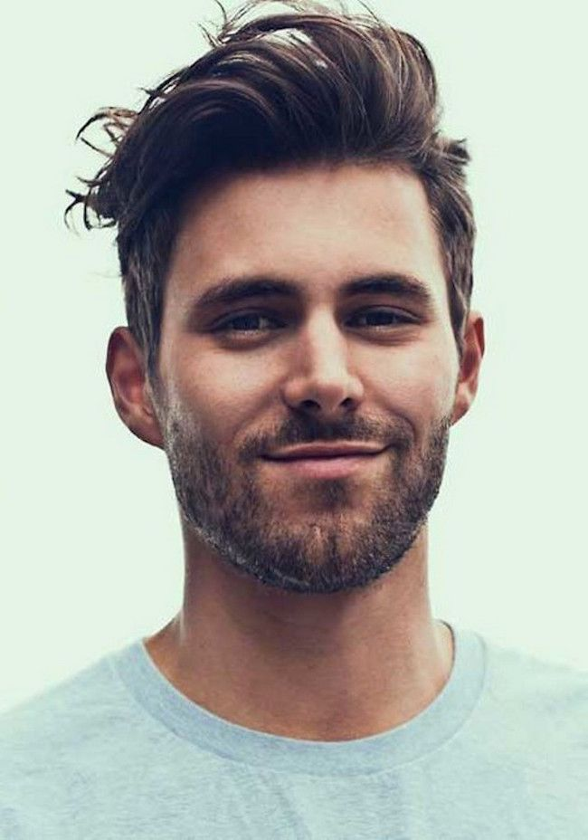
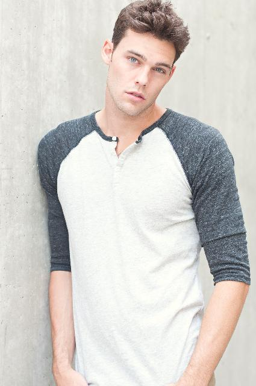

Our Photographers

Aravind

Aravind
Lead Photographer

Aravind
Lead Photographer
About Us
A Canon Photography Mentor, A Profoto Mentor and a member of the International Association of Newborn Photographers, Amrita is one of the most recognised and renowned Maternity and Child photographers from India.
She started her business 'Mommy Shots by Amrita' in 2013 with set ups in Chennai, Bangalore and Singapore, specialising in newborn and Baby portraiture. Bringing babies and photography together was only a natural move, given the love for the two.
Growing from a Portrait photographer to a documentary photographer, trying to capture the reality of life and helping Children in any way possible, her love for kids is real and she is an absolute natural when it comes to portraying children in their element.
Also, an educator, she conducts her workshops across the country and also personally mentors aspiring photographers. She has worked with several celebrities such as Cricketer Ravichandran Ashwin, Robin Uthappa, Murali Vijay, Lakshmipathy Balaji, Actor Arun Vijay, Director Hari, Actor Reshmi Menon and Bobby Simha and many others.
So if you want to tell your child’s story, one unforgettable photograph at a time, you’re at the right place. Here’s to happy beginnings, and welcome to Mommy Shots! You can reach Amrita on +91 9972609349 or use our Contact form to make a booking.